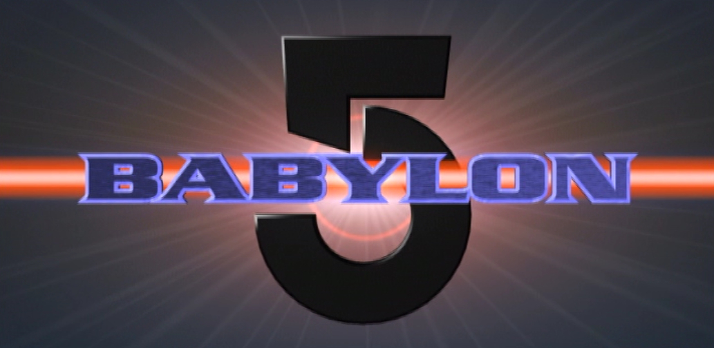
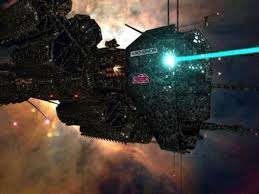
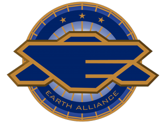
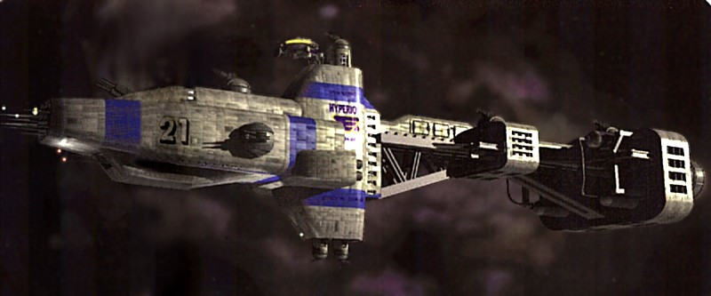
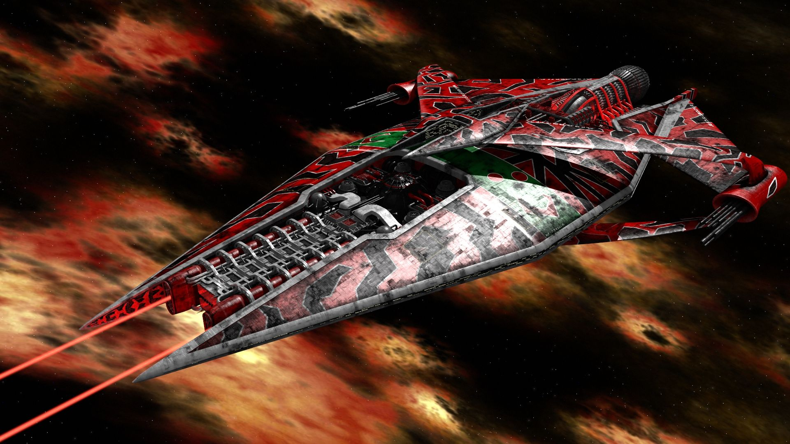

|  |
|
Nº de noms de naus = 14 Nº de noms de naus coneguts = 44 Nº de noms de naus coneguts dorigen Earth_Alliance = 39 Nº de noms de naus coneguts dorigen Narn = 5 |
|||
|---|---|---|---|
| Nom | Bandol | Caracteristiques | Noms coneguts |
|

Omega_Class_destroyer |
 |
Tonelatge: 44.6 de milions de tonelades metriques Longitud: 1717,3 metres Tripulacio: 850 Naus transpotades:
Propulsio:
|
AES Acheron AES Achilles AES Agamemnon AES Agrippa AES Excalibur AES Hermes AES Juno AES Nimrod AES Orion (Nº noms= 9) |
|

Hyperion_type_heavy_cruiser |
Tonelatge: 9.1 de milions de tonelades metriques Longitud: 1187,7 metres Tripulacio: 356 Naus transpotades:
Propulsio:
|
AES Hyperion AES Lexington AES Prometheus AES Trafalgar (Nº noms= 4) |
|
|
Advanced_Omega_Class_destroyer |
Tonelatge: 50 de milions de tonelades metriques Longitud: 1720 metres Tripulacio: 850 Naus transpotades:
Propulsio:
|
(Nº noms= 0) |
|
|

G_Quan |
Tonelatge: 18.6 de milions de tonelades metriques Longitud: 1400 metres Tripulacio: 250 Naus transpotades:
Propulsio:
|
G'Tok (Nº noms= 1) |
|